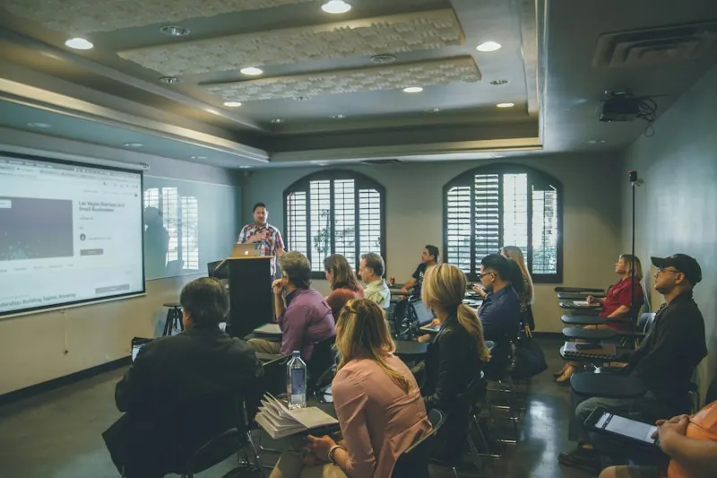
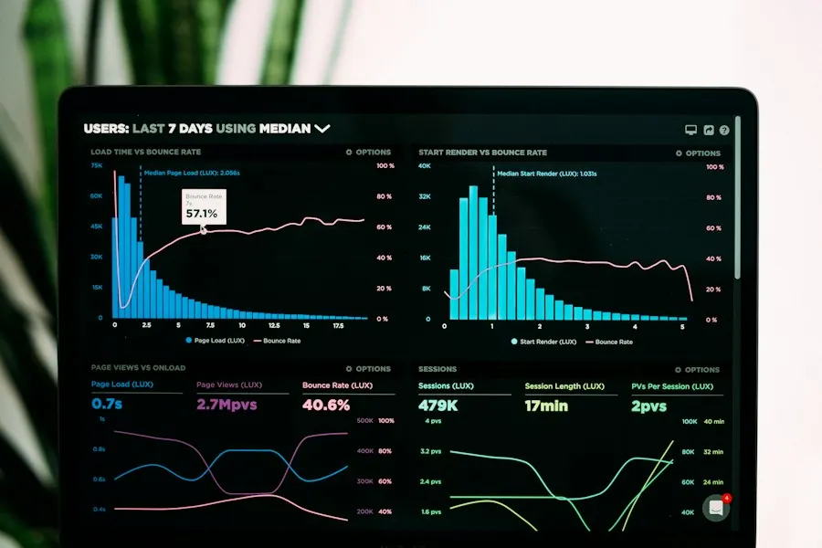

Frontend
Editorial product site
A responsive marketing build with a design system, accessible components, and a performance budget.
View case studyPreparing your workspace
Stackly Coding Bootcamp
Stackly is a project-first coding bootcamp. You start with fundamentals, move into real builds, and ship a portfolio that shows how you think — with mentors reviewing your code at every step.
// Milestone 3 — cart logic, reviewed by your mentor
export function calculateTotal(items) {
return items.reduce((sum, item) => {
const line = item.price * item.qty;
return sum + line;
}, 0);
}
// Tests written alongside the feature
test('sums line items', () => {
expect(calculateTotal(cart)).toBe(4200);
});Learn by Building
Every concept at Stackly arrives attached to something you build. You learn state by building a cart. You learn APIs by wiring a form to a server. Understanding follows the work.
$ git switch -c feature/cart-totals Switched to a new branch $ npm test PASS src/cart/totals.test.js Tests: 6 passed, 6 total
The Curriculum
Four connected stages. Each one assumes the last, and each one produces something you keep — code, a diagram, a deployed build.
Programming logic, problem decomposition, the command line, and your first Git commits.
Semantic HTML, layout systems, responsive CSS, and JavaScript that drives real interfaces.
Servers, routing, persistence, authentication basics, and tests that protect behaviour.
Bringing it together: a deployed product, a written README, and a portfolio case study.
stage focus output foundations logic · cli · git cli tool frontend html · css · js responsive app backend api · db · tests working service delivery architecture · deploy full-stack build
The sequence is fixed so nobody gets lost, while the projects inside each stage are chosen by you. That balance is what makes a cohort feel like a studio instead of a lecture hall.
Browse the full module listResponsive pricing section with three tiers
Frontend Engineering
Frontend is where your work becomes visible, so the feedback is immediate. You build layouts that hold together at every screen size, write markup that assistive technology understands, and keep JavaScript predictable.
Backend Engineering
Backend work is quiet, structural, and deeply satisfying once it clicks. You design routes that make sense, model data that will not fight you later, and write tests that tell you the truth before users do.
GET /api/projects 200 18ms POST /api/projects 201 44ms PATCH /api/projects/:id 200 31ms DELETE /api/projects/:id 204 12ms POST /api/projects 422 validation_error ────────────────────────────────────────────── 6 passed 0 failed coverage 88%
POST /api/projects
201 Created
API telemetry log from student capstone build.
Full-Stack Projects
The full-stack milestone is where separate skills become one system. You design the interface, build the API, shape the database, and deploy the result — then explain your decisions out loud.
const project = {
name: 'Inventory Tracker',
stack: ['html', 'css', 'js', 'node'],
status: 'deployed'
};Developer Tools & Workflow
They’re the small disciplines: clean commits, readable branches, issues that explain intent, and a pull request someone can review without guessing.
Name branches so the next person understands the change before opening the diff.
One logical change per commit, with a message that explains why, not just what.
Context, screenshots, and a note about what you’re unsure of. Reviewers respond to that.
Respond to comments, push follow-up commits, and close the loop politely and clearly.
Mentorship & Code Review
Mentors at Stackly read what you wrote, ask why you wrote it that way, and show you a better path when one exists. That conversation is the part people remember years later.
14
let total = 0;
15
for (let i = 0; i < items.length; i++) {
14
const total = items.reduce(
15
(sum, item) => sum + item.price * item.qty, 0
16
);
Mentor: Reduce expresses the intent in one line — and there’s no index to get wrong.

Cohort & Community
Learning to code is easier when the people around you are stuck on similar problems at the same time. Cohorts give you peers to debug with, explain to, and borrow courage from.
Portfolio & Capstone
Your capstone is a complete product with a written case study: the problem, the decisions, the tradeoffs, and what you would rebuild differently.
A responsive marketing build with a design system, accessible components, and a performance budget.
View case studyClient, API, and database working as one system, with tests covering the paths that matter.
View case study
Resource modelling, validation rules, and integration tests documented for another developer to run.
View case studyLearner work is published only with permission.
Career Preparation
We do not promise job placements. What we can do is help you explain your work clearly, structure a portfolio, and practise the technical conversations that hiring teams actually have.
Forms & validation
Fetch & error states
2 mentor comments
1 review passed
The Learning Experience
Modules, project briefs, review threads, and skill progress live in one place — so you spend your energy on the work instead of hunting for it.
Why Stackly
Stackly exists for learners who would rather build one thing properly than skim ten tutorials. The programme is demanding, structured, and honest about how long competence takes.
Every concept lands inside something you can run, show, and explain.
Mentors read your code and tell you the truth about it, kindly.
No placement guarantees, no invented statistics. Just a clear path and real work.
Peers who debug with you, review your work, and keep you accountable.
Next Steps
Tell us where you are now and what you want to build. We’ll tell you honestly whether Stackly is the right fit — and what to prepare.
Talk to the Stackly teamAdmissions consultations are scheduled individually upon inquiry.
# Your first week
1. Meet your cohort and mentor
2. Set up your tools and first repo
3. Ship a tiny build by Friday
# What you bring
curiosity, consistency, and a laptop.